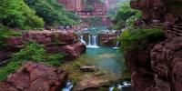
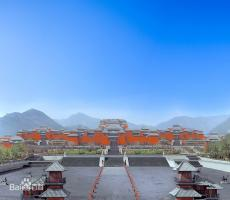
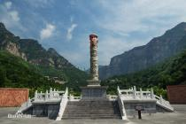
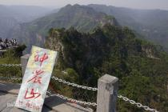
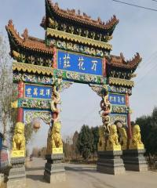
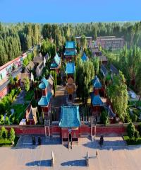
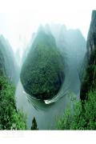
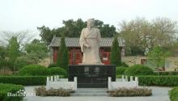
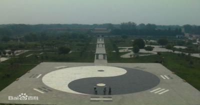

云台山 ：
云台山风景区含红石峡、潭瀑峡、泉瀑峡、子房湖、茱萸峰、叠彩洞、猕猴谷、百家岩、万善寺等主要景点，景区因山势险峻，峰壑之间常年云锁雾绕而得名。云台山主峰茱萸峰海拔1297.6米，景区泉瀑峡尽端的云台天瀑单级落差314米，是我国乃至亚洲单级落差最大的瀑布，被誉为华夏第一高瀑，是云台山的标志性景观之一。

焦作市影视城：
焦作影视城主要景点由城门广场区、周王宫区、灵台、市井街区、楚王宫区、一代天骄区、外景区等多余处影视拍摄景观组成。建筑面积40万平方米，是以春秋战国、秦汉、三国时期文化为背景的仿古建筑群。

神农山风景名胜区：
神农山是国家AAAAA级风景旅游区，位于河南省沁阳市紫陵镇赵寨村，与晋城市山河镇狄河村交界，神农山风景名胜区面积102平方公里。传说，炎帝神农氏在这里辨五谷、尝百草、设坛祭天，故而得名神农山，神农山是全球首批世界地质公园、世界自然基金组织A级优先保护区、国家级重点风景名胜区、国家级猕猴自然保护区、中国摄影家协会创作基地、儒道佛文化名山、中国城市第一媒体旅游联盟举办“首届中国旅游品牌景区”总评榜当选“2011年中国最具实力景区”。


武陟嘉应观景区：
嘉应观，俗名庙宫，又称黄河龙王庙，位于中国河南省焦作市武陟县嘉应观乡，始建于清雍正元年（1723年），是雍正为了纪念在武陟修坝堵口、祭祀河神、封赏治河功臣而建造的淮黄诸河龙王庙，建筑布局效仿故宫，集宫、庙、衙署为一体。观内有雍正亲自撰文并书写的铜碑，立在一河蛟身上，意在镇恶。


青天河风景名胜区：
青天河（原名：红旗水库），青天河风景名胜区，位于河南省焦作市博爱县与山西东南部的晋城市泽州县柳树口镇境内，上世纪90年代由河南省开发经营。

青天河系世界地质公园、河南省十大旅游热点景区，景区面积106平方公里，由天井关、大泉湖、三姑泉、观音峡、佛耳峡、靳家岭、月山寺等七大游览区组成。
韩愈陵园：
韩愈陵园是为纪念伟大的文学家韩愈而建，位于焦作孟州市洛常路北侧韩庄村，距焦作市区72公里，南濒黄河，北倚太行，丘陵环抱，古柏苍翠，雄伟庄严。韩园始建于唐敬宗宝历元年（825年），1986年11月，公布为河南省文物保护单位。

药王庙大殿：
药王庙历史攸久，历经千年沧海桑田，几经泯灭，几经兴衰，几易迁址，几经易名。臻至今朝，仍保留了早期古建筑风格，历经元、明、清代的多次修建，但宋元遗风不减。据说，它的兴建主要是为纪念药王孙思邈，同时经历过历代风霜仍然不倒！
陈家沟：
2004年4月至12月，在南水北调中线穿黄工程建设中，河南省文物考古研究所对焦作市温县陈家沟遗址进行了考古勘探和发掘。共发掘面积4950平方米，清理出龙山文化、两周时期和汉代灰坑480余座，各个时期墓葬55座，龙山时期壕沟2条，东周时期陶窑8座，出土和修复了陶、石、骨、蚌、玉、铜、瓷等不同质地的文物300余件，取得了阶段性成果。

万善寺：
坐落在形似奶头状的阎王鼻山峰下面，周围青山环抱，风景秀丽。它始建于明朝万历年间，相传是朝廷为了镇治此处帝王风脉而建，寺名也属御赐。